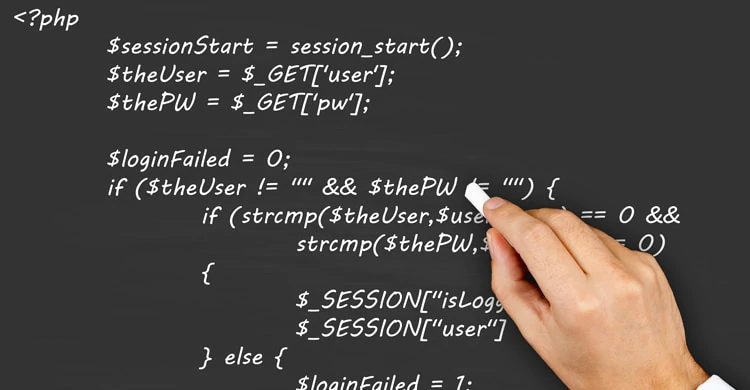
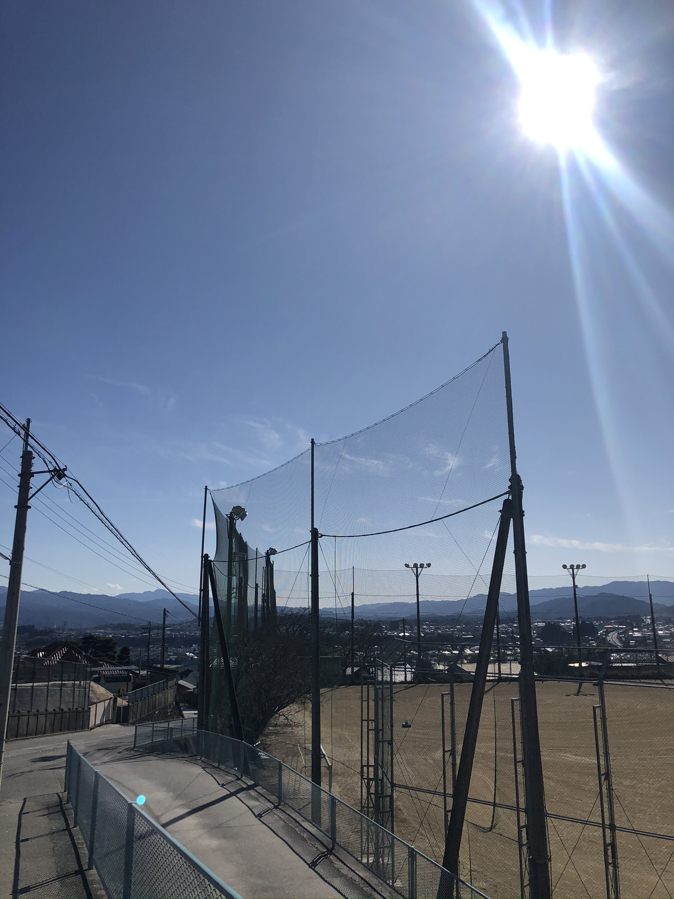

初めて言語を学んで... 2020/3/30
皆さん、こんにちは。秦アキラです。様々な分野の勉強をしてきましたが、やはり学び始めというのは難しいと思います。これって何のために使うの、なにこれ、なんでうまくいかないの。皆さんこんな悩みを抱えるかと思いますがこれはみんなが通る一つ目の大きな壁だと思います。 多くの人は入り口で挫折をします。少しわかりやすい説明をするために世界史を例にとってみましょう。高校受験の世界史レベルだと、 軽く猿人、原人、旧人、新人と覚えさせられ紀元前3000年程から本格的に現代に向かって時を進めます。最初の方はシュメール人って誰だよ、ほんとうにいたのか？とおそらく多くの人が思うと思います。しかし最初の方で歯を食いしばって、 世界史の本質がわかってくると、この教科の楽しさが身をもって体感できます。 少し話がそれましたが、今自分はプログラミング言語の初心者であるためちんぷんかんぷんですが、耐えて頑張っていきたいと思います。
地元の街並みを眺めて… 2020/3/29
皆さん、こんにちは。秦アキラです。ここ最近地元で配達のバイトをしているんですけど、私の地元は上にある画像の通り日本屈指の田舎でありまして （まあそれがすきなんですけど）、配達物を届けるために結構奥まで行きます。気持良い春風や暖かい日光を感じて、「あー、地元って良いな」と再認識します。 田舎であったり交通が不便だという人もいますが確かにそれはれっきとした事実であります。しかし、昔ながらの街並みを都会と比べて維持している田舎は美しいです。 別に新しいものが嫌だとかそういうのではないけど、現代ではあらゆる物が急速に変化しているせいで、身を安らがせる場所がない気がするんですよ。そこで変化の速度が比較的遅い田舎では最適な気がするんですよね。だから自分は都会から田舎へ戻るときに安心するんですよね。地元という理由だけではない気がする。
コミュニケーションの本質は... 2020/4/1
皆さん、こんにちは。秦アキラです。ブログを書いてることからもお分かりいただけるように、私は人と話すことが好きです。好きすぎるあまりやらなければいけないことを後回しにしてまで、人とのコミュニケーションを優先してしまいます。理由の一つに今年度は人と話す機会がそもそも少なかったことです。私は一年間の自宅浪人を決意し、宅浪したもう一人の友達以外は人とめったに話しませんでした。そのせいもあってかいざ大学に向けて友達が増えていくとうまくコミュニケーションが取れないです。それでもやっぱり人と話すのは楽しいし何を言われようとこれは続けたいです。 二つ目は人と話すことによって得られることが多いことです。浪人期間中に何度か高校時代の時に通っていたサッカー部の部活動に顔を出して練習に参加しました。ミニゲーム間にあるチーム内のミーティングである部員Aが「練習において大事なのは、試行錯誤を繰り返して、そこから学んで本番で失敗しないこと」といいました。私は当時、怖くて過去問に向き合うことができず逃げてばかりいました。しかし部員Aが放った何気ない一言で自分はその日から過去問を試験の日まで全部やって、見事合格しました。その出来事を経て自分はコミュニケーションの大切さを再認識しました。会話によって、自分の非を改めたり、成長できるのでこれからもたくさん話していこうと思いました。
人間関係って... 2020/4/2
皆さん、こんにちは。秦アキラです。最近は人間関係の難しさを実感することが多々あります。皆さんも経験あるかもしれませんが、誰かのためにやった行為が真逆の結果を招いてしまうことがありました。抽象的すぎるので少し具体的に説明します。自分は人と話すのが好きであると先日の記事でも述べましたが、話の内容は様々です。今日一日あったことから人生相談まで幅広いです。そして相談をされると自分にとってはされた瞬間に他人事ではなくなってしまいます。何としてでも解決しようと自分が頑張ってしまいます。それは自分が嫌われても結果として解決に迎えばいいと思ってしまうほどです。皆もそうかもしれませんが人から嫌われたくないという感情を自分も持っています。そこでその人を助けたいという強い意志と誰からも嫌われたくないという感情とが衝突し最初は前者が勝ります。しかしその問題がいったん解決されて結果として誰かから嫌われてしまったら、今度は後者が勝ります。このパラドックスに直面をして抜け出せないという状況が多い今日この頃です。わかっていて抜け出せないので、この矛盾から脱出できるような人や本に出会いたいと思っています。
〇プロフィール
こんにちは。秦（ハタ）アキラです。この業界に興味を持ったのは約一年ほど前で、独学で少しずつ言語を習得しています。最初は親戚にチラシや名刺を作成して経験を積んでいました。わからないことだらけですが、一日でも早く様々な知識を習得できるよう精進します。

新時代を切り開くYoutuberになろうです。私とリーダーのなゆ、そしてひろの3人で活動を行っており、まだまだ日も浅くて学ぶことが多いですが、楽しく活動を行っていきたいと思います。ぜひチャンネルをご覧になっていってください！
※気になった方は画像をクリックするとチャンネルへ移動します
学んだ言語(画像をクリック)

HTML&CSS
プログラミングの初歩的な言語であるがベースともなる分野。
絵に例えるならば前者は黒鉛筆で構想を描く作業。
後者は実際に鉛筆に基づいて色をつけ足していく作業。
そんな印象を抱いた。
JavaScript
作業効率を劇的に速めるツール。歴史的な観点から
見てもわかるよう、人は速さを求める。
なぜ多くの道路は40～60km/hなのに大半の車は120km/h
走れるように設計されているのか。様々な要因
が考えられるが、
そのうちの一つは、もう言うまでもないだろう。
Jquery
静を動にするツール。
本能的に動くことを好む人間がいずれこの言語を開発
することになるのは
必然ではなかったのだろうか。人が止まっていると
考えられた睡眠中でさえ人は動いている。

PHP
サイトを構築するのに重要な鍵を握るツール。
料理を例にとると、調味料を添えるイメージ。素材本来
の良さを引き出すのに必要不可欠。
なくても食べれないことはないが、あったほうが断然良い。
Ruby
可能性を飛躍させるツール。1つの道を２つに分岐させたり、
仕事を効率化させる。窮屈な現代ではRubyから学ぶことが
たくさんあると思う。